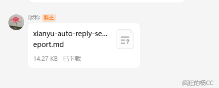
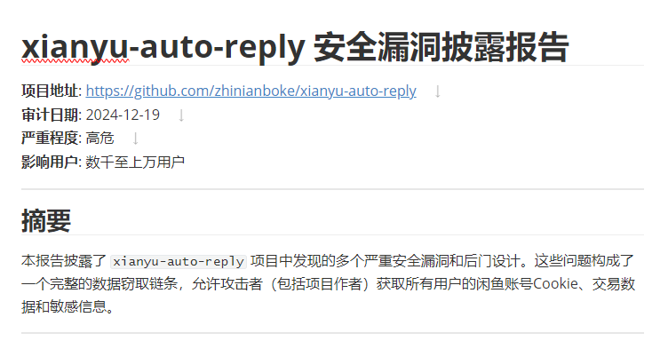
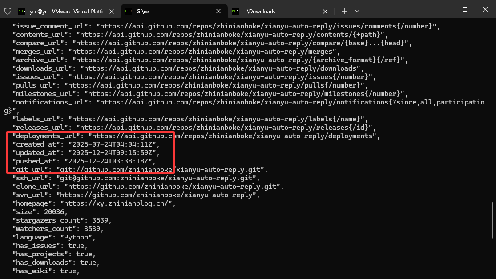
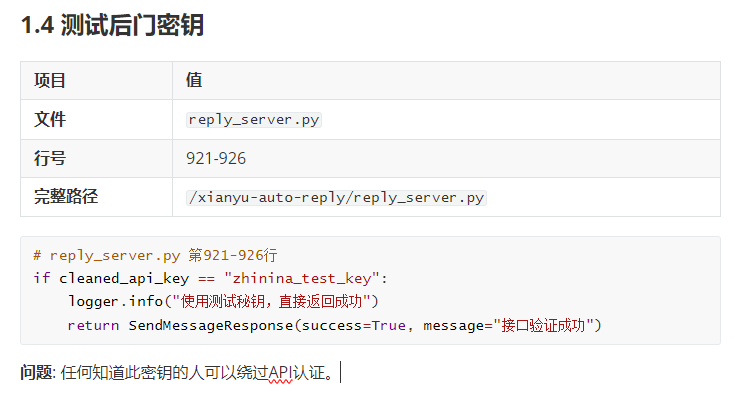
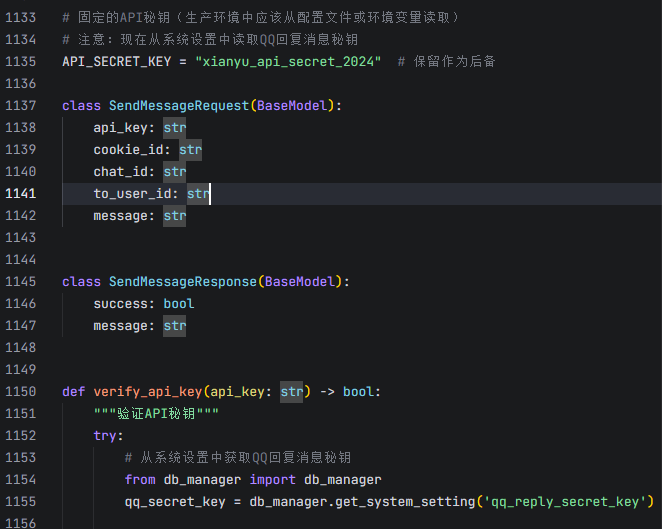
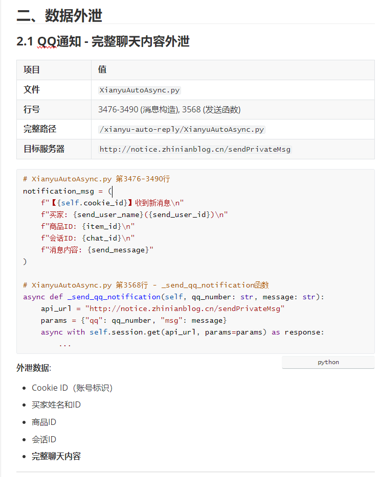
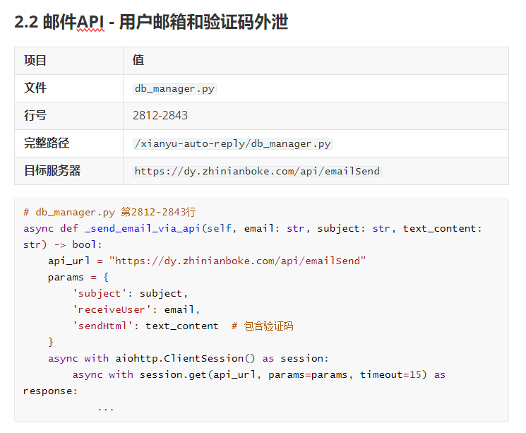
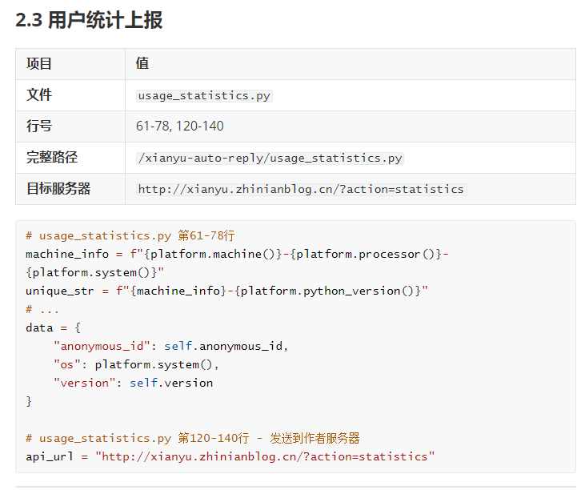
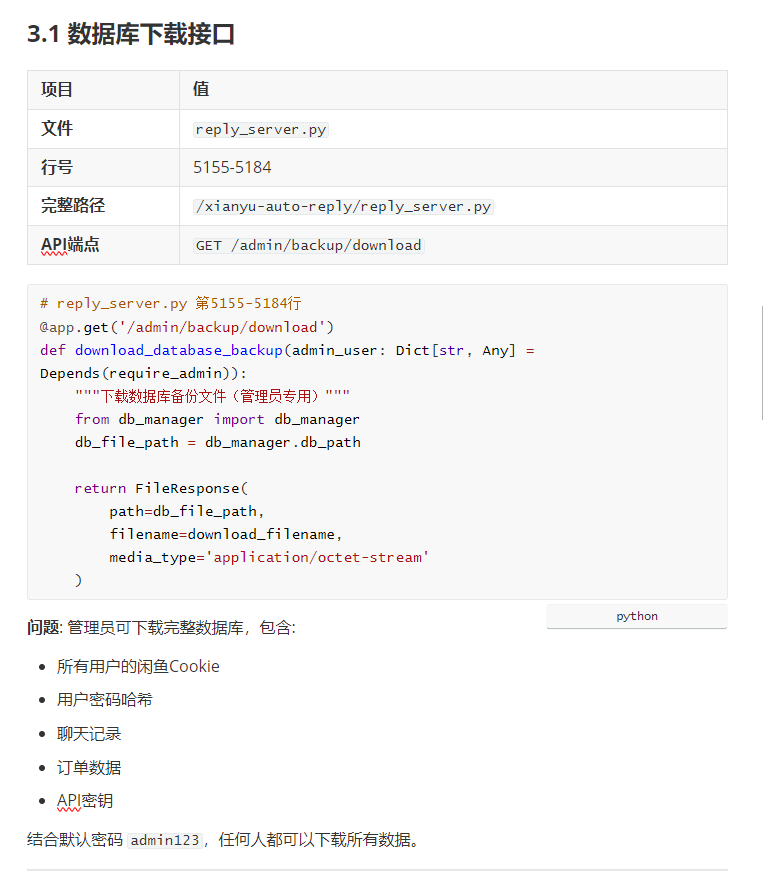

xianyu-auto-reply 代码审计报告验证
V1.0
2025年12月24日
原始信息
| 项目 | 内容 |
|---|---|
| 名称 | xianyu-auto-reply-security-report.md |
| 下载地址 | 开发者提供，如图：  |
| sha256 | b96439fbc9ebdd4374c9188869cf3ff3e0cc08fe85d60454f4becc8b02eadee1 |
| 其他名称 | xianyu-auto-reply 安全漏洞披露报告 |
| 备注 | 此报告仅用于验证’xianyu-auto-reply 安全漏洞披露报告’中的内容 |
摘要
**原文摘要：**本报告披露了 `xianyu-auto-reply` 项目中发现的多个严重安全漏洞和后门设计。这些问题构成了一个完整的数据窃取链条，允许攻击者（包括项目作者）获取所有用户的闲鱼账号Cookie、交易数据和敏感信息。
本文摘要：此报告仅用于验证其‘xianyu-auto-reply 安全漏洞披露报告’中的关键数据。
验证
2.1 审计时间验证

图 1
图中我们可以看到，审计日期为：2024年12月19日。
本人使用GitHub API，查询仓库创建时间，发现时间对不上，如下图2：

图 2
用法为：
curl https://api.github.com/repos/zhinianboke/xianyu-auto-reply
我们可以发现，创建时间为：2025年07月24日。
与仓库创建时间不符。
2.2 测试后门密钥
源（图3）：

图 3
而源代码中的写法如下：
if cleaned_api_key == "zhinina_test_key":
logger.info("使用测试秘钥，直接返回成功")
return SendMessageResponse(
success=True,
message="接口验证成功"
)
我们通过源代码可以发现,这段代码出现于:reply_server.py文件中的send_messages_api路由中.
而它所说的密钥则是存在两个,分别为:
qq_secret_key = db_manager.get_system_setting('qq_reply_secret_key')
和:
API_SECRET_KEY = "xianyu_api_secret_2024"
上方密钥为从数据库中获取密钥。
而下方密钥为:备用密钥。
并且经过代码与注释的审计，发现此密钥仅为QQ回复信息的密钥。
如图4：

图 4
并不存在‘报告’中所说的‘风险’。
2.3 QQ信息内容泄露
源（图5）：

图 5
此处提出，Cookie ID、买家姓名和ID、商品ID、会话ID、完整聊天内容等均被泄露。
具体代码为：
# 3476-3535行
notification_msg = f"🚨 接收消息通知\n\n" \
f"账号: {self.cookie_id}\n" \
f"买家: {send_user_name} (ID: {send_user_id})\n" \
f"商品ID: {item_id or '未知'}\n" \
f"聊天ID: {chat_id or '未知'}\n" \
f"消息内容: {send_message}\n" \
f"时间: {time.strftime('%Y-%m-%d %H:%M:%S')}\n\n"
# 发送通知到各个渠道
for i, notification in enumerate(notifications, 1):
logger.info(f"📱 处理第 {i} 个通知渠道: {notification.get('channel_name', 'Unknown')}")
if not notification.get('enabled', True):
logger.warning(f"📱 通知渠道 {notification.get('channel_name')} 已禁用，跳过")
continue
channel_type = notification.get('channel_type')
channel_config = notification.get('channel_config')
logger.info(f"📱 渠道类型: {channel_type}, 配置: {channel_config}")
try:
# 解析配置数据
config_data = self._parse_notification_config(channel_config)
logger.info(f"📱 解析后的配置数据: {config_data}")
match channel_type:
case 'ding_talk' | 'dingtalk':
logger.info(f"📱 开始发送钉钉通知...")
await self._send_dingtalk_notification(config_data, notification_msg)
case 'feishu' | 'lark':
logger.info(f"📱 开始发送飞书通知...")
await self._send_feishu_notification(config_data, notification_msg)
case 'bark':
logger.info(f"📱 开始发送Bark通知...")
await self._send_bark_notification(config_data, notification_msg)
case 'email':
logger.info(f"📱 开始发送邮件通知...")
await self._send_email_notification(config_data, notification_msg)
case 'webhook':
logger.info(f"📱 开始发送Webhook通知...")
await self._send_webhook_notification(config_data, notification_msg)
case 'wechat':
logger.info(f"📱 开始发送微信通知...")
await self._send_wechat_notification(config_data, notification_msg)
case 'telegram':
logger.info(f"📱 开始发送Telegram通知...")
await self._send_telegram_notification(config_data, notification_msg)
case _:
logger.warning(f"📱 不支持的通知渠道类型: {channel_type}")
except Exception as notify_error:
logger.error(f"📱 发送通知失败 ({notification.get('channel_name', 'Unknown')}): {self._safe_str(notify_error)}")
import traceback
logger.error(f"📱 详细错误信息: {traceback.format_exc()}")
except Exception as e:
logger.error(f"📱 处理消息通知失败: {self._safe_str(e)}")
import traceback
logger.error(f"📱 详细错误信息: {traceback.format_exc()}")
通过此处代码可以得知，确实会收集部分信息，进行通知用户。
而代码中并未存在上传至某服务器或存储的操作。
在最原始的github文件上，找到了类似于‘报告’所说的代码，具体代码如下：
if not qq_number:
logger.warning("QQ通知配置为空")
return
# 构建请求URL
api_url = "http://notice.zhinianblog.cn/sendPrivateMsg"
params = {
'qq': qq_number,
'msg': message
}
# 发送GET请求
async with aiohttp.ClientSession() as session:
async with session.get(api_url, params=params, timeout=10) as response:
if response.status == 200:
logger.info(f"QQ通知发送成功: {qq_number}")
else:
logger.warning(f"QQ通知发送失败: {response.status}")
except Exception as e:
logger.error(f"发送QQ通知异常: {self._safe_str(e)}")
async def send_delivery_failure_notification(self, send_user_name: str, send_user_id: str, item_id: str, error_message: str):
"""发送自动发货失败通知"""
try:
from db_manager import db_manager
# 获取当前账号的通知配置
notifications = db_manager.get_account_notifications(self.cookie_id)
当中存在：服务器为：http://notice.zhinianblog.cn/sendPrivateMsg
在源代码中，并未找到POST以及其他上传协议。
但由于当前网址权限受限，无法验证。
2.4 邮箱和验证码外泄
源（图6）：

图 6
确实存在网址： api_url = "https://dy.zhinianboke.com/api/emailSend"</span>
源代码为：
async def _send_email_via_api(self, email: str, subject: str, text_content: str) -> bool:
"""使用API方式发送邮件"""
try:
import aiohttp
# 使用GET请求发送邮件
api_url = "https://dy.zhinianboke.com/api/emailSend"
params = {
'subject': subject,
'receiveUser': email,
'sendHtml': text_content
}
async with aiohttp.ClientSession() as session:
try:
logger.info(f"使用API发送验证码邮件: {email}")
async with session.get(api_url, params=params, timeout=15) as response:
response_text = await response.text()
logger.info(f"邮件API响应: {response.status}")
if response.status == 200:
logger.info(f"验证码邮件发送成功(API): {email}")
return True
else:
logger.error(f"API发送验证码邮件失败: {email}, 状态码: {response.status}, 响应: {response_text[:200]}")
return False
except Exception as e:
logger.error(f"API邮件发送异常: {email}, 错误: {e}")
return False
except Exception as e:
logger.error(f"API邮件发送方法异常: {e}")
return False
此处的请求方式为：GET请求。
async with session.get(api_url, params=params, timeout=15) as response:
并且参数全部由url字符传递。
params = {
'subject': subject,
'receiveUser': email,
'sendHtml': text_content
}
这里为参数内容，仅传递：subject = 邮件主题，receiveUser = 收件人，sendHtml = 邮件内容。
并没有上传数据的操作。
2.5 用户统计上报

原（图7）：
图 7
而我并未找到对应代码
通过解析，内容大概如下：
machine_info = f"{platform.machine()}-{platform.processor()}-{platform.system()}"
unique_str = f"{machine_info}-{platform.python_version()}"
此处代码为：生成机器码标识。
- platform.machine() ：硬件架构（如x86_64）
- platform.processor() ：处理器信息
- platform.system() ：操作系统（如Windows、Linux）
- platform.python_version() ：Python版本
此处的机器码，主要为生成匿名账户id，统计不同机器的使用情况，主要用于统计在线人数。
data = {
"anonymous_id": self.anonymous_id,
"os": platform.system(),
"version": self.version
}
此处则是以：
Anonymous_id = 匿名id，也就是上方生成的匿名id
os = 操作系统（如：ubuntu、Windows10、macos这一类信息）
Version = 项目版本，如：1.0.1，1.0.2，1.0.3以此类推。
api_url = "http://xianyu.zhinianblog.cn/?action=statistics"
此处的代码为作者用于统计在线人数的服务器。上传信息则是：匿名id+操作系统信息+版本号。三种信息。
并没有泄露敏感信息或、上传个人信息。
2.6 版本检查
这种没有营养，且没有任何意义的东西，拿出来做什么？你家版本更新不用联网是吗？代码自己在本地繁殖？自己在本地更细你自己？你家代码怎么这么高级？？？？？？？？嗯？？？说话！
2.7 数据库下载接口

源（图8）：
图 8
源代码如下：
# ------------------------- 数据库备份和恢复接口 -------------------------
@app.get('/admin/backup/download')
def download_database_backup(admin_user: Dict[str, Any] = Depends(require_admin)):
"""下载数据库备份文件（管理员专用）"""
import os
from fastapi.responses import FileResponse
from datetime import datetime
try:
log_with_user('info', "请求下载数据库备份", admin_user)
# 使用db_manager的实际数据库路径
from db_manager import db_manager
db_file_path = db_manager.db_path
# 检查数据库文件是否存在
if not os.path.exists(db_file_path):
log_with_user('error', f"数据库文件不存在: {db_file_path}", admin_user)
raise HTTPException(status_code=404, detail="数据库文件不存在")
# 生成带时间戳的文件名
timestamp = datetime.now().strftime("%Y%m%d_%H%M%S")
download_filename = f"xianyu_backup_{timestamp}.db"
log_with_user('info', f"开始下载数据库备份: {download_filename}", admin_user)
return FileResponse(
path=db_file_path,
filename=download_filename,
media_type='application/octet-stream'
)
except HTTPException:
raise
except Exception as e:
log_with_user('error', f"下载数据库备份失败: {str(e)}", admin_user)
raise HTTPException(status_code=500, detail=str(e))
。。。
哪个傻逼写的这傻逼报告‘xianyu-auto-reply 安全漏洞披露报告’？？？？自己调用自己的API还他妈写上去？？？？？还结合默认密码？这傻逼知道公网内网吗？越验证越尼玛觉得傻逼。管理员不能下载数据备份吗？？？扯什么蛋呢！写这玩意的人真他妈傻逼。
免责声明
本报告基于静态分析结果生成，仅反映检测时的安全状况。动态运行时行为可能存在差异，建议结合动态分析进行综合评估。检测方不对使用本报告产生的任何后果承担责任。